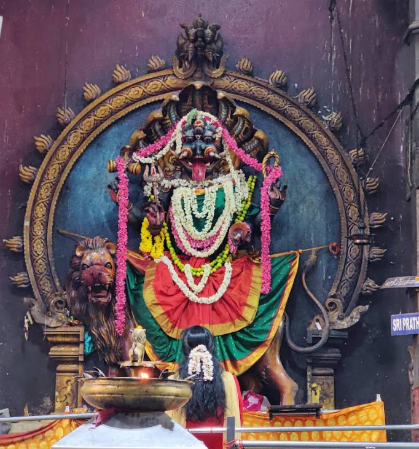
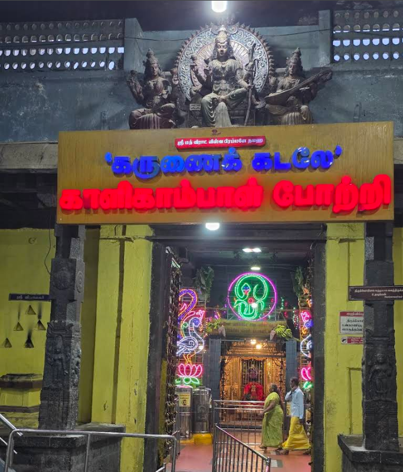

 
The Kalikambal Kamadeswarar Temple, located on Thambu Chetty Street in Chennai's historic George Town, is an ancient Hindu shrine dedicated to Goddess Kalikambal (a form of Parvati) and Lord Kamadeswarar (a form of Shiva), known for its Dravidian architecture and significant history, including a visit by Chhatrapati Shivaji in 1677 and regular patronage by Subramaniya Bharati, with its deities originally in a fierce form that was later softened, making it a popular spot for devotees seeking fulfillment of wishes.
Deities: Goddess Kalikambal (Shakti) & Lord Kamadeswarar (Shiva).
Location: Thambu Chetty Street, Parry's Corner (George Town), Chennai.
History: Built in the 17th century, once located inside St. George Fort, shifted to its current spot.
Significance: Fierce deity form changed to calm posture by Adi Shankaracharya; believed to grant wishes; visited by Shivaji & Bharati.